Στην σημερινή δωρεάν Java EE 8 ενότητα θα ασχοληθούμε
με τα Stateful Beans. Σε αντίθεση με τα Stateless
Session Beans, τα Stateful Session Beans διατηρούν την
επικοινωνία με τον client και θυμούνται όλες τις προηγούμενες
καταστάσεις του αντικειμένου που άλλαξαν μέσω ενός ή περισσοτέρων
αιτημάτων στις μεθόδους του Bean.
Ένα Stateful Session Bean δεν μοιράζεται ανάμεσα στους clients οπότε
η σύνδεση (reference) του client με το Bean αντικείμενο θα
τερματίσει μόνο όταν ο client σταματήσει την επικοινωνία ή λήξει
ο χρόνος ένωσης (session timeout). Αυτός είναι άλλωστε και ο λόγος
που η χρήση τους σε εφαρμογές με πάρα πολλούς χρήστες πρέπει
να γίνεται προσεχτικά γιατί για κάθε online χρήστη θα υπάρχει
και ένα bean αποκλειστικά για αυτόν για όσο παραμένει συνδεδεμένος.
Αν θυμάστε στα Stateless Session Beans είχαμε ένα αριθμό beans τα
οποία όλοι οι χρήστες μοιραζόντουσαν. Δηλαδή, το ίδιο bean μπορεί
να εξυπηρετούσε έναν διαφορετικό χρήστη κάθε φορά ή τον ίδιο. Νομίζω
ότι τουλάχιστον θεωρητικά μπορείτε να καταλάβετε την διαφορά τώρα.
Το κλασικό παράδειγμα ενός Stateful Session Bean είναι το
ηλεκτρονικό καλάθι αγοράς. Ο χρήστης προσθέτει ένα η περισσότερα
αντικείμενα σε ένα καλάθι αγορών, ενδεχομένως για μεγάλο χρονικό
διάστημα, ενώ ο χρήστης επισκέπτεται άλλους ιστότοπους. Τέλος, ο χρήστης
μπορεί να αποφασίσει να αγοράσει τα περιεχόμενα του καλαθιού, να ακυρώσει
την αγορά, η να εγκαταλείψει απότομα το site χωρίς να τερματίσει επίσημα
την διαδικασία αγοράς.
Όπως και στα Stateless Session Bean, έτσι και στα Stateful
Session Beans υπάρχουν annotations που υποδηλώνουν κάποιες συγκεκριμένες
λειτουργίες. Δύο από αυτά είναι ακριβώς τα ίδια με τα εκείνα του Stateless Session
Bean (@PostConstruct και @PreDestroy). Υπάρχουν όμως δύο ακόμα για το Stateful
Session Bean που ολοκληρώνουν το lifecycle του – @PreActivate και @PrePassivate.
Τα δύο αυτά annotations δεν χρησιμοποιούνται συχνά, μάλλον θα έλεγα σχεδόν καθόλου.
Ας δώσουμε μια γρήγορη περιγραφή σε κάθε ένα από αυτά πριν προχωρήσουμε.
@PostConstruct – η μέθοδος που έχει αυτό το annotation
θα εκτελεστεί μετά την δημιουργία του bean αντικειμένου και πριν
καλέσουμε την πρώτη business μέθοδο του bean.
@PreDestroy – Η εκτέλεση της μεθόδου που έχει αυτό
το annotation θα ολοκληρωθεί μετά από οποιαδήποτε μέθοδο έχει το
annotation @Remove και πριν το αντικείμενο αφαιρεθεί από τον container
του Application Server. Το annotation @Remove είναι πολύ χρήσιμο σε
μεθόδους του Stateful Session Beans γιατί όταν εκτελεστεί η μέθοδος,
ο EJB container του application server θα αφαιρέσει το bean αντικείμενο
από το object pool – δηλαδή από τον αριθμό των beans που είναι διαθέσιμα
στην μνήμη.
@PrePassivate – Μέθοδοι με αυτό το annotation θα απενεργοποιηθούν
και η κατάστασή τους (state) θα αποθηκευτούν σε προσωρινή μνήμη
(cache) όταν δεν έχουν χρησιμοποιηθεί για αρκετό καιρό (παραμένουν idle).
Αυτή η διαδικασία επίσημα ονομάζεται passivation και απλά σημαίνει ότι
αποθηκεύεται το αντικείμενο από την μνήμη στο σκληρό δίσκο.
@PostActivate – Μέθοδοι με αυτό το annotation
ενεργοποιούνται πίσω όλες οι μέθοδοι που βρισκόντουσαν στην
προσωρινή μνήμη (cache) όταν ο χρήστης καλεί το Stateful Session
Bean. Τα δύο τελευταία annotations υπάρχουν για να γίνει μια καλύτερη
διαχείριση της μνήμης όταν χρησιμοποιούνται Stateful Session Beans.
Στο πιο κάτω παράδειγμα, θα δείτε το κλασικό πρόγραμμα
ενός καλαθιού αγοράς για ένα online βιβλιοπωλείο. Δημιουργούμε
ένα Web project με το όνομα StatefulBeanExample. Προσθέτουμε
το beans.xml για να ενεργοποιηθεί το injection. Αλλάζουμε τον
κώδικα του index.html στον παρακάτω κώδικα:
index.html
<!DOCTYPE html>
<html>
<head>
<title>Bookstore</title>
<meta charset="UTF-8">
<meta name="viewport" content="width=device-width, initial-scale=1.0">
<meta charset="utf-8">
<meta name="viewport" content="width=device-width, initial-scale=1, shrink-to-fit=no">
<link rel="stylesheet" href="https://maxcdn.bootstrapcdn.com/bootstrap/4.0.0/css/bootstrap.min.css"
integrity="sha384-Gn5384xqQ1aoWXA+058RXPxPg6fy4IWvTNh0E263XmFcJlSAwiGgFAW/dAiS6JXm"
crossorigin="anonymous">
</head>
<body>
<h1>Bookstore</h1>
<form method="POST" action="MyServlet">
<table>
<tr>
<div class="form-group">
<td><label for="mybook">What is your favorite book? </label></td>
<td><select id="nybook" name="mybook">
<option value="Ulysses">Ulysses</option>
<option value="Don Quixote">Don Quixote</option>
<option value="Moby Dick">Moby Dick </option>
</select>
</div>
</tr>
<tr>
<td><input type="submit" class="btn btn-primary mb-2" value="Add Item" name="add"/></td>
</tr>
<tr>
<td><input type="submit" class="btn btn-primary mb-2" value="Delete Item" name="delete"/></td>
</tr>
<tr>
<td><input type="submit" class="btn btn-primary mb-2" value="Browse Basket Items" name="browse"/></td>
</tr>
<tr>
<td><input type="submit" class="btn btn-primary mb-2" value="Clear Basket Items" name="clear"/></td>
</tr>
</table>
</form>
</body>
</html>
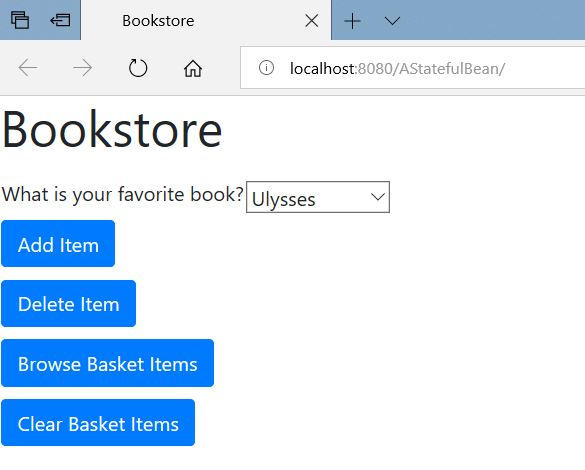
Έχουμε δημιουργήσει μια απλή φόρμα η οποία περιλαμβάνει τέσσερα κουμπιά –
το Add Item, Delete Item, Browse Basket Items και Clear Basket
Items. Κάθε ένα από αυτά τα κουμπιά καλούν διαφορετικές μεθόδους
του Stateful Session Bean. Για να μπορέσουμε όμως να καλέσουμε τις
μεθόδους του Stateful Session Bean, θα χρειαστεί να περάσουμε πρώτα
από ένα Servlet το οποίο έχει την ικανότητα και δυνατότητα να διαβάζει
τις html εντολές και μετά να καλεί τον αντίστοιχο Java κώδικα. Οπότε
δημιουργούμε ένα πακέτο με το όνομα com.mycompany, και μέσα στο
πακέτο δημιουργούμε ένα Servlet με το όνομα MyServlet, και ένα BasketBean.
BasketBean.java
package com.mycomany;
import java.util.ArrayList;
import java.util.List;
import javax.annotation.PostConstruct;
import javax.annotation.PreDestroy;
import javax.ejb.Stateful;
@Stateful
public class BasketBean {
List<String> contents;
@PostConstruct
public void initialize(){
contents = new ArrayList<>();
}
public void addBook(String title) {
contents.add(title);
}
public void removeBook(String title){
boolean result = contents.remove(title);
}
public List<String> getContents() {
return contents;
}
public void remove() {
contents.clear();
}
@PreDestroy
public void destroy(){
System.out.println("Cleaning up all resources before shut down");
}
}
BasketBean.java
package com.mycomany;
import java.io.IOException;
import java.io.PrintWriter;
import javax.inject.Inject;
import javax.servlet.ServletException;
import javax.servlet.http.HttpServlet;
import javax.servlet.http.HttpServletRequest;
import javax.servlet.http.HttpServletResponse;
/**
*
* @author mkassapoglou
*/
public class MyServlet extends HttpServlet {
@Inject
BasketBean basket;
protected void processRequest(HttpServletRequest request, HttpServletResponse response)
throws ServletException, IOException {
response.setContentType("text/html;charset=UTF-8");
try (PrintWriter out = response.getWriter()) {
if (request.getParameter("add") != null) {
String name = request.getParameter("myname");
String book = request.getParameter("mybook");
if (book.contains("Ulysses")) {
basket.addBook("Ulysses");
}
if (book.equals("Don Quixote")) {
basket.addBook("Don Quixote");
}
if (book.equals("Moby Dick")) {
basket.addBook("Moby Dick");
}
}
else if(request.getParameter("delete") != null){
String book = request.getParameter("mybook");
if (book.contains("Ulysses")) {
basket.removeBook("Ulysses");
}
if (book.equals("Don Quixote")) {
basket.removeBook("Don Quixote");
}
if (book.equals("Moby Dick")) {
basket.removeBook("Moby Dick");
}
}
else if(request.getParameter("browse") != null){
}
else if(request.getParameter("clear") != null){
basket.remove();
}
/* TODO output your page here. You may use following sample code. */
out.println("<!DOCTYPE html>");
out.println("<html>");
out.println("<head>");
out.println("<title>Flight Reservation</title>");
out.println("</head>");
out.println("<body>");
out.println("<p>Your book list is: " + basket.getContents());
out.println("<p/>");
out.println("<a href='index.html'>Add another book</a>");
out.println("</body>");
out.println("</html>");
}
}
// <editor-fold defaultstate="collapsed" desc="HttpServlet methods. Click on the + sign on the left to edit the code.">
/**
* Handles the HTTP <code>GET</code> method.
*
* @param request servlet request
* @param response servlet response
* @throws ServletException if a servlet-specific error occurs
* @throws IOException if an I/O error occurs
*/
@Override
protected void doGet(HttpServletRequest request, HttpServletResponse response)
throws ServletException, IOException {
processRequest(request, response);
}
/**
* Handles the HTTP <code>POST</code> method.
*
* @param request servlet request
* @param response servlet response
* @throws ServletException if a servlet-specific error occurs
* @throws IOException if an I/O error occurs
*/
@Override
protected void doPost(HttpServletRequest request, HttpServletResponse response)
throws ServletException, IOException{
processRequest(request, response);
}
/**
* Returns a short description of the servlet.
*
* @return a String containing servlet description
*/
@Override
public String getServletInfo() {
return "Short description";
}// </editor-fold>
}
Το MyServlet διαβάζει την παράμετρο name του κουμπιού που
έχει ενεργοποιηθεί και εκτελεί την αντίστοιχη μέθοδο από
το Bean. Για παράδειγμα, αν έχουμε πατήσει το κουμπί Add
Item, του οποίου η name παράμετρος είναι add, τότε αφού
επιλέξουμε πιο βιβλίο θέλουμε να προσθέσουμε στην λίστα,
θα καλέσουμε την μέθοδο addbook( ) για να το προσθέσει.
Αντίστοιχα το κουμπί Delete Item με name παράμετρο delete
θα αφαιρέσει το βιβλίο που έχουμε επιλέξει από την λίστα.
Το Browse Basket Items μας δείχνει όλα τα βιβλία που έχουμε
ήδη στο καλάθι αγοράς μας, ενώ το Clear Basket Items καθαρίζει
το καλάθι αγοράς για να ξεκινήσουμε την διαδικασία από την αρχή.
Στο κώδικα του BasketBean, το πρώτο πράγμα που θα παρατηρήσετε
είναι το annotation @Stateful το οποίο χαρακτηρίζει το Bean
σαν Stateful Session Bean. Οι @PostConstruct και @PostDestroy
μέθοδοι λειτουργούν ακριβώς με τον ίδιο τρόπο όπως και στα
Stateless Session Bean.
Τέλος, επειδή ακόμα δεν έχουμε μάθει να γράφουμε και
να διαβάζουμε από μια βάση με την χρήση του JPA framework,
απλά χρησιμοποιούμε ένα ArrayList με το όνομα contents για
να παίξει το ρόλο της βάσης.
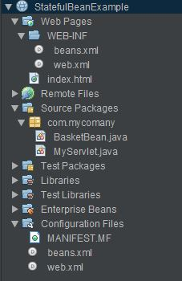
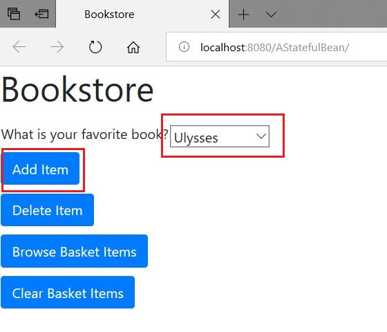
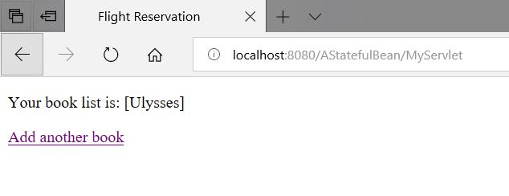
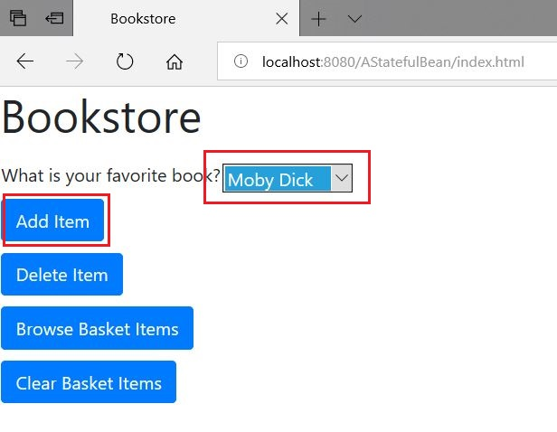
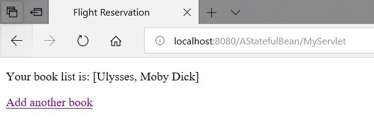
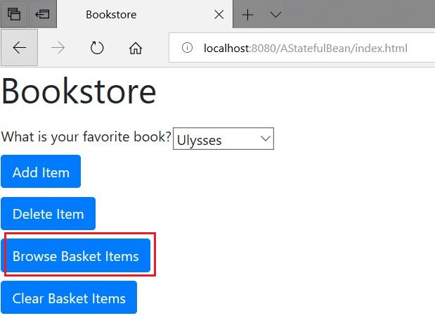
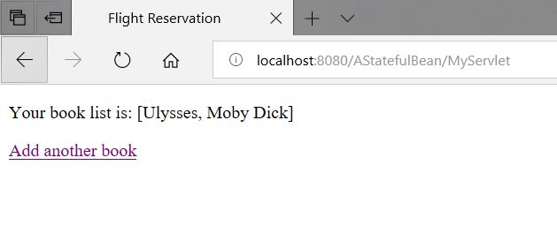
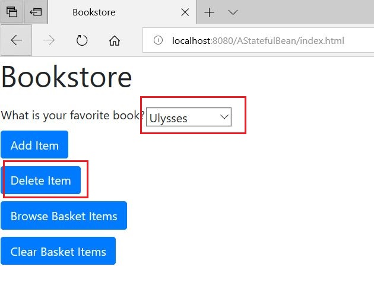
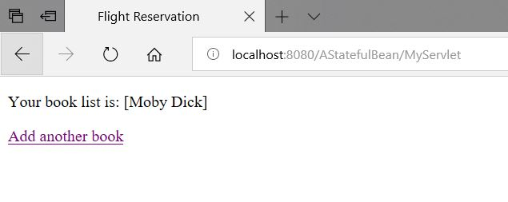
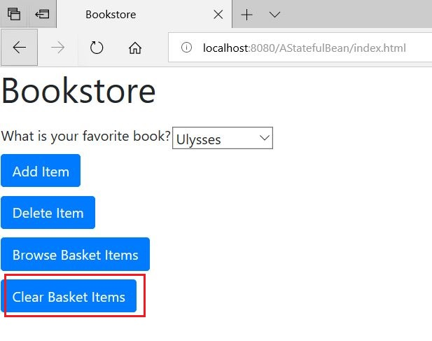
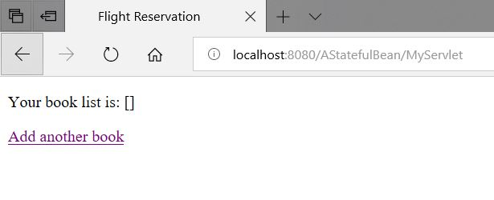
Michail Kassapoglou Admin
Γεια σας, είμαι ο Μιχάλης Κασάπογλου και θα σας διδάξω με τον ποιο απλό
τρόπο να προγραμματίζετε σε Java EE. Ασχολούμαι με την τεχνική εκπαίδευση
σε διάφορες πλατφόρμες, λειτουργικά συστήματα και γλώσσες προγραμματισμού
πάνω από 20 έτη. Κατέχω έναν αρκετά μεγάλο αριθμό πιστοποιήσεων Microsoft και Oracle
και σαν Τraining Lead στην Intrasoft έχω την δυνατότητα να αναβαθμίζω συνεχώς
τις γνώσεις μου και να έχω άμεση επαφή με αληθινά projects και εξειδικευμένες μεθόδους
ανάπτυξης εφαρμογών που έχουν υψηλές απαιτήσεις.
Για τυχόν ερωτήσεις σας μπορείτε να επικοινωνήσετε μαζί μου
στο Michail.Kassapoglou@gmail.com
Σας ευχαριστώ που επισκεφτήκατε την ιστοσελίδα μου.